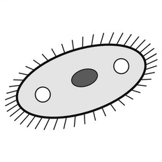

Begründe, ob die Aussage stimmt: „Zwiebelzellen haben Chloroplasten.“ Schreibe ein bis zwei Sätze.
Satzanfang: Die Aussage stimmt (nicht), weil …
3:00
allein · ohne Absprache · schriftlich
Falsch.
Chloroplasten kommen in grünen Pflanzenteilen vor, zum Beispiel in Blättern. Das Zwiebelhäutchen ist nicht grün und wächst unter der Erde. Im Bild sieht man nur Zellwand und Zellkern.
Was fällt euch auf?
Zellen stecken im Körper eines Menschen.
Quelle: Lehrbuch Klasse 7, Kapitel „Die Zelle“ (Abbildungen ohne Beschriftung zugeschnitten). Bild anklicken zum Vergrößern.
Eure Fragen
Aufgaben 1 und 2
Unsere Frage:…
1
Ordne die vier Bilder von M1 oder M2 vom Kleinsten zum Größten. Schreibe die Bildnummern in die Kästchen.
Niveau E–F
2
Benenne jede Stufe mit dem passenden Fachbegriff aus dem Wortspeicher.
Niveau E
15:00
Bilder (antippen oder ziehen)
Fachbegriffe
Aufgabe 3
15:00
Unsere Frage:…
3
Erkläre, warum ein Organ mehr leisten kann als eine einzelne Zelle. Nutze M1 oder M2 als Beispiel.
Niveau F
Wortspeicher
Zel-le · Ge-we-be · Or-gan · Or-ga-nis-mus
Zu Aufgabe 3: Eine einzelne Zelle kann nur … · In einem Organ übernimmt jedes Gewebe … · Dadurch kann das Organ …
Zusatz für Schnelle
4
Beurteile, ob die Leiter aus Aufgabe 1 und 2 auch für das Pantoffeltierchen passt. Es besteht nur aus einer Zelle.

Niveau F–G
Zu Aufgabe 4 (Zusatz): Das Pantoffeltierchen hat nur … · Es hat keine … · Die Leiter passt (nicht), weil …
Tafelbild
Unsere Frage:…
Beispiel Magen (Mensch)
Beispiel Pflanze (Baum)
Merksatz: Zellen mit gleicher Aufgabe bilden ein Gewebe. Mehrere Gewebe bilden ein Organ. Zusammenarbeitende Organe bilden einen Organismus.
Tisch-Quiz: Wiederholung
1
Lest die Frage und schreibt Stichworte auf euer Schmierblatt.
2
Sprecht kurz im Team ab. Alle sagen ihre Antwort.
3
Vergleicht mit der Lösung. Gebt euch einen Punkt, wenn es passt.
4 Fragen · ca. 7 Minuten · am Platz im Team · Anzahl Teams:6
Frage 1 von 4
1
Erkläre, warum Zellen unterschiedlich geformt sind.
1:30
Stichworte aufs Schmierblatt, dann kurz im Team absprechen.
Zellen sind unterschiedlich groß und unterschiedlich geformt, weil ihre Struktur zu ihrer Funktion passt. Beispiel: Eine Nervenzelle ist lang und hat Fortsätze, weil sie Signale weiterleitet.
Frage 2 von 4
2
Nenne vier Teile des Mikroskops.
1:30
Stichworte aufs Schmierblatt, dann kurz im Team absprechen.
Beschreibe in drei Schritten, wie man ein Zwiebelpräparat herstellt.
1:30
Stichworte aufs Schmierblatt, dann kurz im Team absprechen.
1. Zwiebelhäutchen mit der Pinzette abziehen. 2. In einen Wassertropfen auf den Objektträger legen und glatt ausbreiten. 3. Deckglas schräg auflegen, ohne Luftblasen. (Mit den Schritten aus dem Heft abgleichen.)
Frage 4 von 4
4
Vergleiche Pflanzenzelle und Tierzelle. Nenne zwei Gemeinsamkeiten und zwei Unterschiede.
1:30
Stichworte aufs Schmierblatt, dann kurz im Team absprechen.
Gemeinsam: Zellkern, Zellplasma, Zellmembran (auch Mitochondrien). Unterschied: Nur die Pflanzenzelle hat Zellwand, große Vakuole und (in grünen Teilen) Chloroplasten.
Reservefragen
R1
Nenne drei Kennzeichen des Lebendigen.
Zum Beispiel: Wachstum, Fortpflanzung, Stoffwechsel, Reizbarkeit, Bewegung, Entwicklung. (Mit dem Hefteintrag abgleichen.)
R2
Beschreibe, wie die Zelle entdeckt wurde.
Robert Hooke betrachtete im 17. Jahrhundert (1665) dünne Korkscheiben mit einem Mikroskop. Er sah kleine Kammern und nannte sie „Zellen“.
Ampel-Check
Ich kann …
1 die vier Ebenen Zelle, Gewebe, Organ und Organismus nennen 2 Bilder den Ebenen zuordnen 3 erklären, warum ein Organ mehr leistet als eine Zelle 4 Beispiele für Mensch und Pflanze nennen
Kreuze die Ampel auf dem Arbeitsblatt an (Seite 2).
Meinungsbild per Handzeichen
rot: üben
gelb: wiederholen
grün: kann ich
Hausaufgabe (freiwillig):Wiederhole die roten und gelben Punkte mit M3 und deinem Heft.